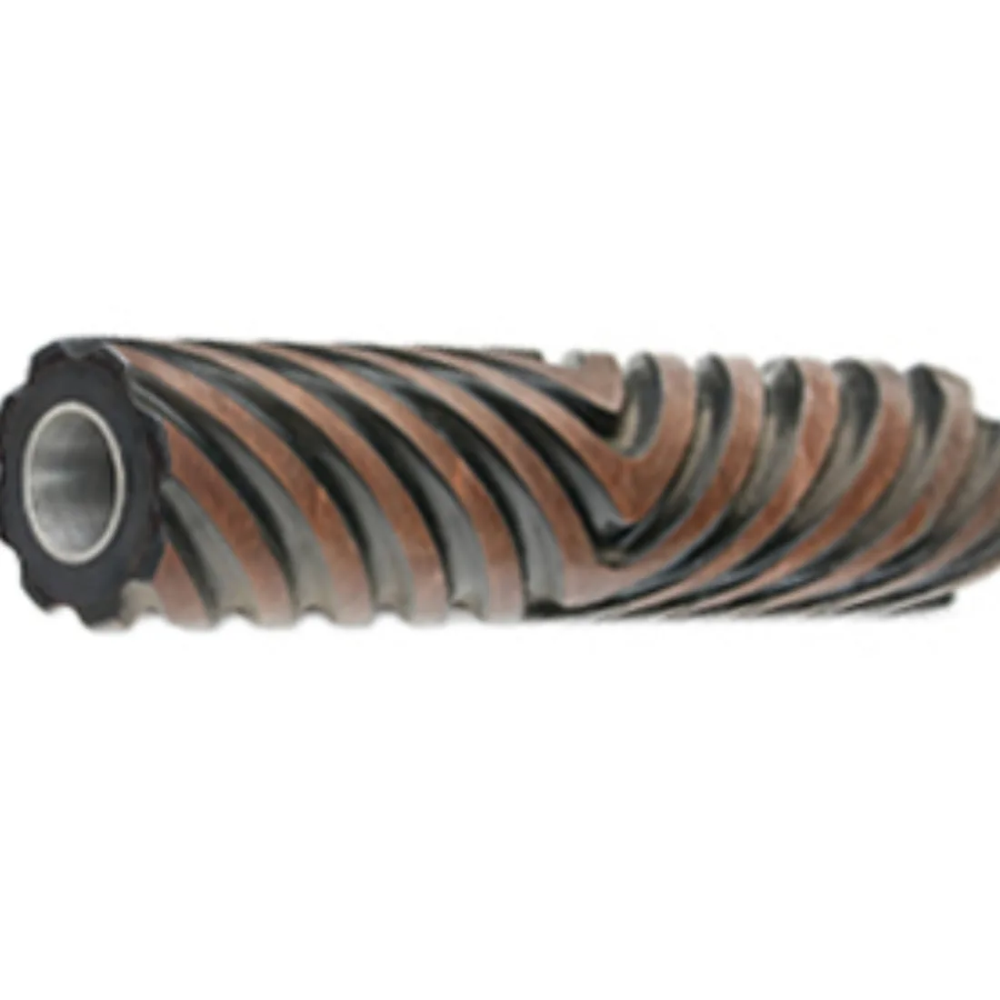
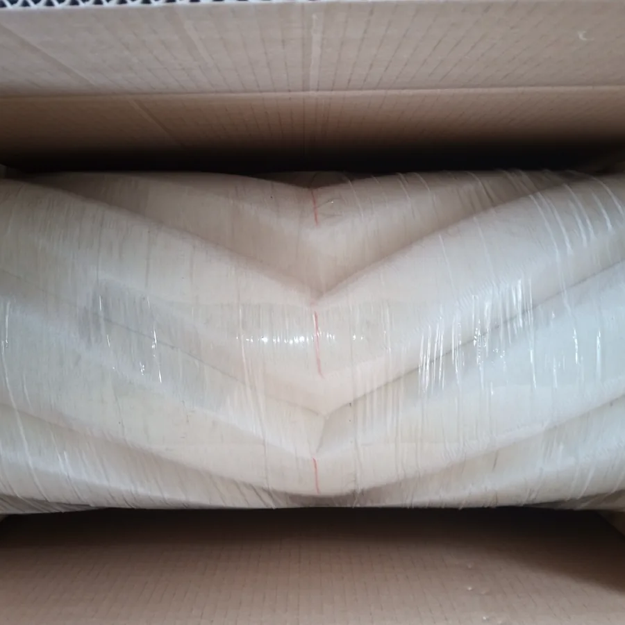
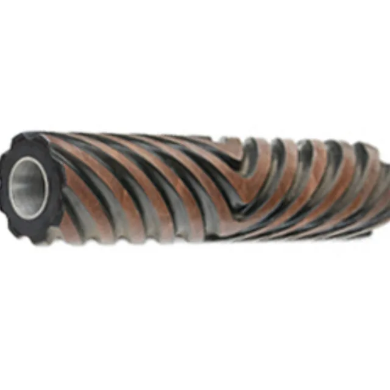
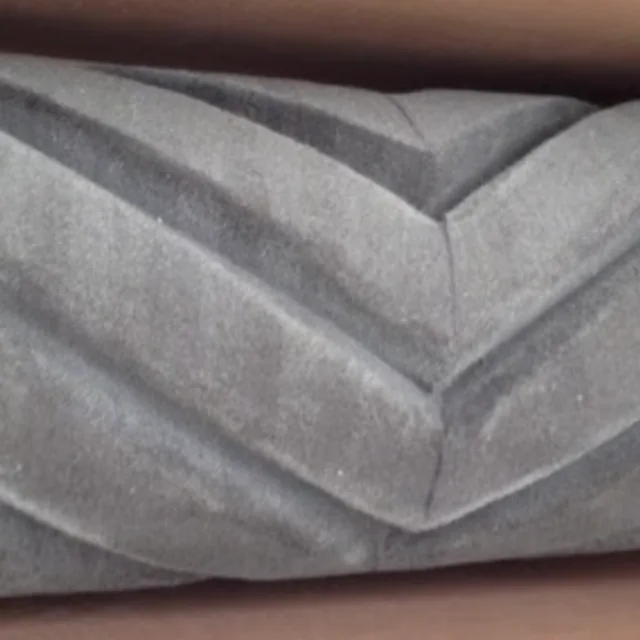
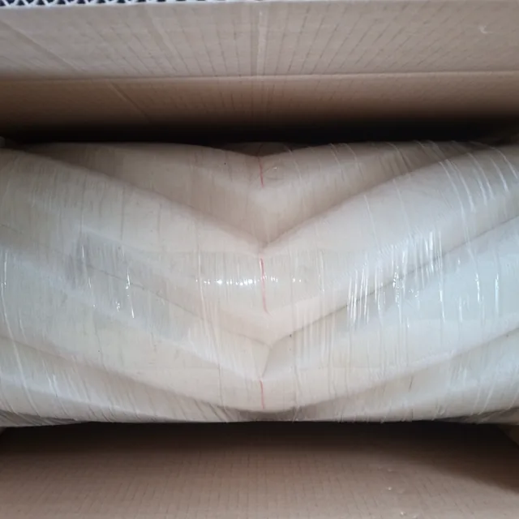

Polishing Machine
Spare Parts
Polishing cylinders and rollers for leather polishing machines — amber stone rollers and pre-assembled green cloth and white cotton cylinders. They smooth the grain and bring up the shine on waxed, aniline and pull-up leathers. Matched to your machine and quality-checked before they ship.

Reduce Downtime
Keep a spare stone roller and pre-assembled cloth and cotton cylinders on the shelf. When a cylinder glazes or loses its bite, swap it and your polishing line is back to a bright, even finish in minutes, not days.
Bright, Even Shine
The right cylinder, fresh and balanced, polishes every part of the grain the same. Stone to smooth, cloth to buff, cotton to finish — a clean, uniform lustre without burning or marking the surface.
Matched To Your Machine
Stone, cloth and cotton cylinders identified against your exact brand and model — original and compatible, pre-assembled and ready to mount. Matched to your leather and finish, with no minimum order.
Spare Parts for
Leather Polishing
Kymera Group supplies the polishing cylinders and rollers for the polishing machines used in tanneries to bring up the shine and smooth the grain of finished leather. The hide passes under rotating cylinders that buff and polish the surface, developing a natural lustre on waxed, aniline and pull-up leathers and on glazed articles that finishing chemicals alone cannot give.
From the amber stone roller that levels and smooths the grain to the pre-assembled green cloth and white cotton cylinders that buff and bring up the final gloss, we source the right cylinder for your specific machine — ready-assembled and balanced. Tell us your brand, model and the leather and lustre you produce, and we'll match the cylinder and quote it for you.

The Complete
Polishing Machine Catalogue
The full set of polishing cylinders — the amber stone roller that smooths the grain, and the pre-assembled green cloth and white cotton cylinders that buff and bring up the shine — matched to your brand and model and quality-checked before dispatch.

Stone Roller (Amber)
The amber abrasive stone roller. Rotating against the leather it levels and smooths the grain, removing slight irregularities and preparing an even, uniform surface for the cloth and cotton cylinders that follow.
Request a Quote
Pre-Assembled Green Cloth Roller
A green cloth polishing cylinder, ready to mount. The cloth discs buff the finish to even out the surface and start the shine on waxed, aniline and pull-up leathers — the intermediate step between stone and cotton.
Request a Quote
Pre-Assembled White Cotton Roller
A white cotton polishing cylinder, ready to mount. The soft cotton discs give the final polish, raising a clean, even gloss on the grain without marking the finish — the last cylinder in the sequence.
Request a QuotePolishing Cylinders
The cylinder is the heart of the machine: its material decides how coarse or fine the polishing action is, and the sequence builds the lustre from rough to bright. These are the working principles and the three cylinders behind a clean, even shine.
Polish By Rotation
The leather passes under a fast-rotating cylinder pressed against the grain. The friction of the cylinder face works the finished surface — smoothing, buffing and raising a natural lustre that finishing chemicals alone cannot give.
Amber Stone Roller
The abrasive first stage. The amber stone levels and smooths the grain, taking down slight irregularities and preparing an even, uniform surface for the cloth and cotton cylinders that follow.
Green Cloth Roller
The intermediate buff. The green cloth discs even out the surface and start the shine, working the grain harder than cotton but softer than stone — the bridge between smoothing and final gloss.
White Cotton Roller
The finishing pass. The soft white cotton discs raise a clean, bright, even gloss on the grain without marking the finish — the last cylinder in the polishing sequence.
Ready To Mount
The cloth and cotton cylinders come pre-assembled — discs already mounted and balanced — so they fit straight onto the machine with no on-site assembly. Discs wear and glaze, so cylinders are renewed or re-covered to restore the action.
Pressure & Lustre
The cylinder material, the pressure on the grain and the cylinder speed set how hard the surface is worked and how high the gloss comes up. Matched to the article so the grain shines even and bright — never burnt or marked.
How bright and even the leather comes up is set mainly by the cylinder — stone, cloth or cotton — and the sequence they run in, fine-tuned by pressure and cylinder speed. The discs wear, glaze and lose their bite with use, so cylinders are renewed or re-covered to restore the polish. We supply the amber stone roller and the pre-assembled green cloth and white cotton cylinders, matched to your machine and the lustre you need to produce.
Polishing, Step by Step
The polishing machine works the finished grain under rotating cylinders to bring up a bright, even shine — building the lustre from coarse to fine. Here is the cycle on the production floor.
Feed & Press
The finished hide is fed in and pressed against the rotating cylinder at constant speed and pressure across the grain.
Stone & Smooth
The amber stone roller levels and smooths the grain, taking down slight irregularities to an even, uniform surface.
Cloth & Cotton
The green cloth and white cotton cylinders buff and polish the surface in turn, raising a clean, bright gloss on the grain.
Inspect & Stack
The polished hide is checked for an even lustre and stacked — grain bright and smooth, ready for the next operation.
The Polishing
Machine At Work
Watch the polishing cylinders run on the leather — the stone, cloth and cotton rollers working the grain to a bright, even shine.
Your Questions,
Answered
What does a polishing machine do to leather?
A leather polishing machine passes the hide under rotating cylinders that buff and smooth the finished grain to bring up shine, even out the surface and give a clean, glossy hand. It is used mainly on waxed, aniline and pull-up leathers and on glazed articles, where mechanical polishing develops a natural lustre that finishing chemicals alone cannot. The cylinders run in sequence — stone to level and smooth, then cloth and cotton to raise the final gloss.
What are the stone, cloth and cotton rollers for?
Each cylinder does a different stage. The amber stone roller is abrasive: it levels and smooths the grain. The pre-assembled green cloth roller buffs the surface, evening it out and starting the shine. The pre-assembled white cotton roller gives the final polish, raising a clean, even gloss without marking the finish. Running them in order — stone, cloth, cotton — builds the lustre from coarse to fine.
What does pre-assembled mean, and can you re-cover cylinders?
Pre-assembled means the cloth or cotton discs are already mounted and balanced on the cylinder, ready to fit straight onto your machine with no on-site assembly. The discs wear, glaze and lose their bite with use, so the cylinder is renewed or re-covered to restore the polishing action. We supply complete pre-assembled cylinders and replacement stone rollers matched to your machine and finish.
Which leathers are polished on a polishing machine?
Polishing is used wherever the article needs a bright, smooth, lustrous grain: waxed and aniline upholstery and shoe leathers, pull-up leathers, glazed kid and box calf, and corrected-grain articles that need an even sheen. The cylinder choice and pressure are matched to the leather and finish so the grain comes up glossy and even without burning or marking the surface.
How do you choose the right cylinder and pressure?
The cylinder material — stone, cloth or cotton — sets how coarse or fine the polishing action is, and the pressure and cylinder speed set how hard the grain is worked. A heavier, firmer article takes more stone and pressure; a delicate aniline takes a light cloth or cotton pass. Tell us your leather and the lustre you want and we will match the cylinder and advise on the sequence.
Which polishing machine brands do your parts fit, and is there a minimum order?
Our polishing cylinders and rollers are compatible with the most widespread brands of leather polishing machines, including Ficini and Bergi. There is no minimum order quantity — a single stone roller, one pre-assembled cloth or cotton cylinder or a full set, supplied with the same care.
Send Your Request
Tell us your polishing machine brand and model, the cylinder you need — stone, cloth or cotton — or the leather and lustre you produce, and the quantity. We'll come back to you with the right cylinder, the right price, and a clear lead time.